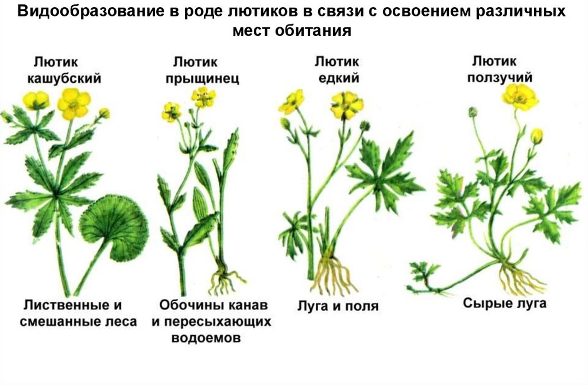

. Образование новых видов в природе является важнейшим этапом в процессе эволюции. Дарвин доказал, что образование новых видов в природе происходит под влиянием движущих сил эволюции. При изменении условий существования внутри вида идет процесс расхождения признаков — дивергенция, которая приводит к образованию новых группировок особей внутри вида. От исходного вида берет начало целый «пучок» форм, но не все они получают 38 Эволюционное учение дальнейшее развитие. Наиболее расходящиеся по признакам формы обладают большими возможностями оставлять плодовитое потомство и выживать, так как они меньше конкурируют между собой, чем промежуточные, которые постепенно вымирают в борьбе за существование под действием естественного отбора в бесконечном ряду поколений.
В крайние формы, средние также могли выжить и дать потомство. Из крайних форм иногда развивается одна, но может развиваться и более. Если условия среды не изменяются или мало изменяются в течение длительного времени, то вид остается почти неизменным по сравнению с родоначальным. Рассмотрите схему, наглядно показывающую эволюцию высших систематических групп ° С 30-х годов текущего столетия внимание ученых привлекает популяция как форма существования вида (с. 18). Новые исследования проливают свет на самые начальные этапы эволюционного процесса, которые протекают внутри вида и приводят к образованию новых внутривидовых группировок — популяций и подвидов. Этот процесс называют микроэволюцией. Она доступна непосредственному наблюдению и изучению, так как может происходить в исторически короткое время.
Географическое видообразование связано с расширением ареала исходного вида или с расчленением ареала на изолированные части физическими преградами (горы, реки, изменения климата). При расширении ареала вида его популяции встречаются с новыми почвенно-климатическими условиями, а также с новыми сообществами животных, растений и микроорганизмов. В популяции постоянно возникают наследственные изменения, происходит борьба за существование, действует естественный отбор. Все это со временем приводит к изменению генного состава популяции — к микроэволюции. В дальнейшем эволюция популяции может привести к возникновению нового вида. Например, лиственница сибирская далеко продвинулась на восток; ее популяции заселили территорию от Урала до Байкала и оказались в различных условиях. У особей популяции постоянно возникали мутации, в результате скрещивания появлялись новые комбинации генов; благодаря этим процессам популяция становилась неоднородной. В процессе борьбы за существование и в результате действия естественного отбора выживали и оставляли потомство особи с полезными в конкретных условиях обитания изменениями. Действие этих факторов на протяжении длительного времени способствовало появлению более резких различий между популяциями и в конечном итоге возникновению биологической изоляции — нескрещиваемости особей разных популяций одного вида. В результате в более суровых условиях под действием движущих сил эволюции сформировался новый вид — лиственница даурская.
В условиях Крайнего Севера подобным образом образовался особый вид мака с небольшими, сильно опушенными листьями, быстрым развитием коротких цветоносов и ранним цветением. Еще пример: у лесного ландыша сначала был сплошной ареал, но с оледенением он распался на изолированные части; на этих территориях сформировались самостоятельные популяции, признаваемые некоторыми учеными за молодые виды. Повсеместно распространенный в Европе прострел занимает непрерывный ареал с запада на восток. У западной формы листья тонко рассечены и разбросаны, цветки поникшие, благодаря чему при обилии дождей на западе вода разбрызгивается и не застаивается, а пыльца не смывается. Восточная форма в засушливых условиях характерна более грубо рассеченными, стоячими листьями и стоячими цветками, по которым вода стекает к корням. Опытами доказано, что листья восточной формы испаряют воду значительно меньше, чем листья западной. Все эти отличия прострела на западе Европы от прострела на востоке носят приспособительный характер. Между западной и восточной формами прострела существует непрерывный ряд переходных форм. В средней полосе Советского Союза произрастает более 20 видов лютика. Все они произошли от одного вида. Потомки его заселили различные места обитания — степи, леса, поля — и благодаря изоляции обособились друг от друга сначала в подвиды, потом в виды.
Вид синица большая представляет сложный комплекс популяций и подвидов, находящихся на разных ступенях изоляции. Ареалы трех подвидов синицы большой — евроазиатского, южноазиатского и восточноазиатского — образуют кольцо вокруг Центральноазиатского нагорья — кольцевой ареал. Подвиды занимают хорошо очерченные ареалы, но в зонах контакта южноазиатские синицы скрещиваются с двумя другими подвидами. Восточноазиатские и евроазиатские, обитая совместно в долинах верхнего Амура не скрещиваются. Обособление ареалов синиц и образование их подвидов связано с наступлением ледника. 40 Эволюционное учение В озере Байкал живут многие виды и роды ресничных плоских червей, ракообразных и рыб, больше нигде не встречающиеся, так как озеро отделено от других водных бассейнов горными хребтами уже около 20 млн. лет. Экологическое видообразование происходит в тех случаях, когда популяции одного вида остаются в пределах своего ареала, но условия обитания у них оказываются различными. Под влиянием движущих сил эволюции изменяется их генный состав. Через множество поколений эти изменения могут зайти так далеко, что особи разных популяций одного вида не будут скрещиваться между собой, возникнет биологическая изоляция, что характерно, как правило, для разных видов. Например, один вид традесканции сформировался на солнечных скалистых вершинах, а другой — в тенистых лесах. В пойме нижней Волги образовались виды житняка, костра, щетинника (мышея), которые дают семена до разлива реки или после него. Этим они обособлены от исходных видов, растущих на незаливаемых местах и осеменяющихся по преимуществу во время разлива.
Пять видов синиц образовались в связи с пищевой специализацией: синица большая питается крупными насекомыми в садах, парках; лазоревка добывает мелких насекомых в щелях коры, в почках; хохлатая синица питается семенами хвойных деревьев; гаичка и московка питаются преимущественно насекомыми в лесах разных типов 10. Популяции севанской форели I различаются по срокам нереста, местам и глубине нерестилищ (озеро, река). Видообразование продолжается и в наше время. Вид черный дрозд в настоящее время распадается на две группы, еще не различимые внешне. Одна из них обитает в глухих лесах, другая держится близ жилья человека. Это можно считать началом образования двух подвидов. Популяции и подвиды иногда неразличимы. На разных этапах микроэволюции один способ сменяет другой или они действуют совместно. Географическая изоляция может в дальнейшем присовокупить действие экологической, поэтому трудно установить границы каждого способа видообразования. Образованием нового вида завершается микроэволюция. Результаты эволюции. Эволюция имеет три тесно связанных важнейших следствия: 1) постепенное усложнение и повышение организации живых существ; 2) относительная приспособленность организмов к условиям внешней среды; 3) многообразие видов.